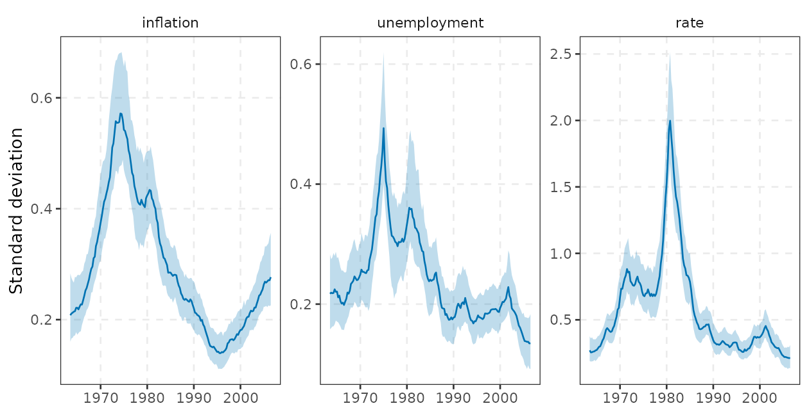
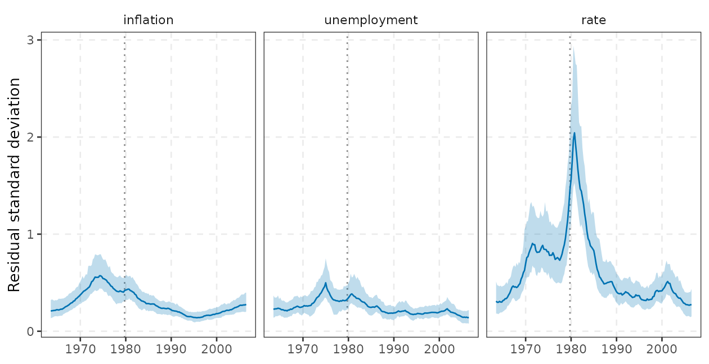
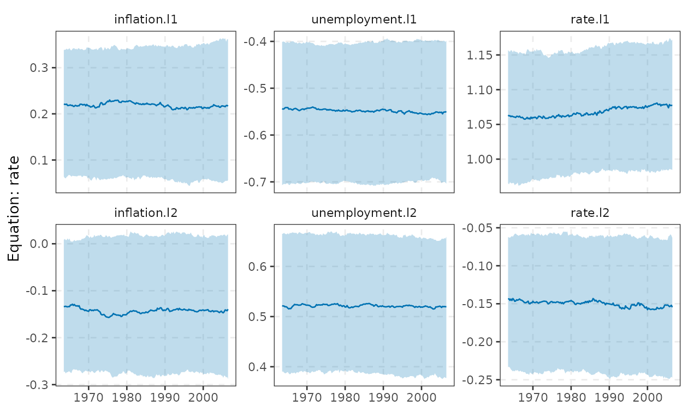
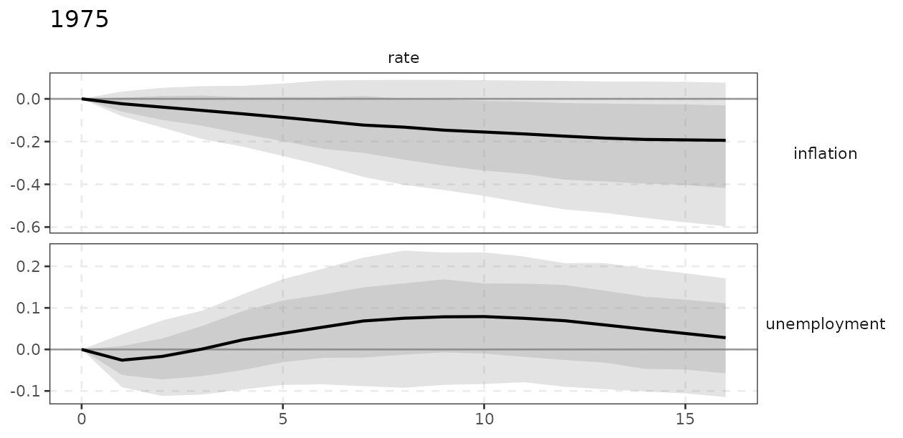
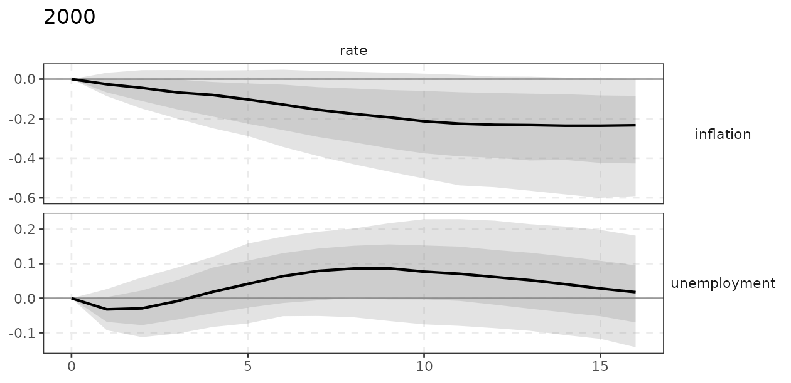
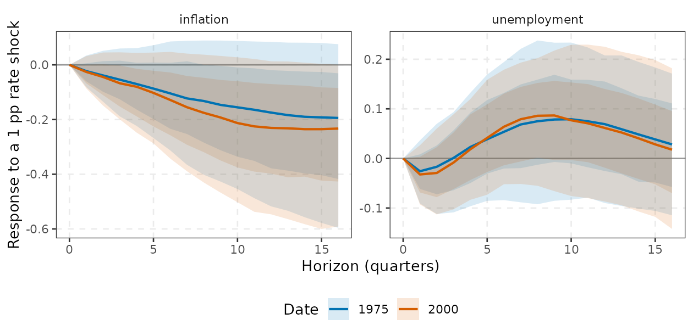
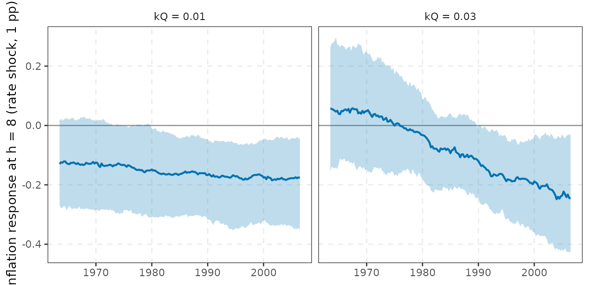

tvpvar() estimates a VAR whose coefficients,
contemporaneous (impact) matrix and shock volatilities all drift over
time (Cogley and Sargent, 2005; Primiceri, 2005), using the
Gibbs-sampler ordering of Del Negro and Primiceri (2015). It answers the
questions that a constant-parameter VAR cannot: did the transmission
mechanism change (for example the response to a monetary policy
shock), and did the size of shocks change (the Great
Moderation)?
It is also the model in this package where the prior matters most. Section 6 documents, with simulations, how the results depend on the prior tightness and when time variation can be found where none exists. Read it before interpreting any estimated drift.
A first look (the sections below explain each object):
fit <- tvpvar(yt, p = 2, ndraw = 2000, nburn = 1000)
autoplot(fit, "vol") # volatility paths
irf(fit, date = c(1975, 2000), horizon = 16) # impulse responses at two dates1. The model
Let ( regressors) and let be the matrix of coefficients with (equation by equation). The model, in the notation of the code, is is unit lower triangular with free elements (the elements below the diagonal, equation by equation), and is the time-varying reduced-form covariance. So , a recursive (Cholesky) structure with time-varying impact coefficients and shock sizes.
Three distinct kinds of time variation, with different economics:
| state | what moves | interpretation |
|---|---|---|
| (covariance ) | lag coefficients | the transmission mechanism: for example a policy rule that reacts more to inflation after Volcker |
| (innovation variances ) | size of the structural shocks | the Great Moderation, 2008, 2020 |
| (covariance ) | contemporaneous coefficients | how shocks spread within the quarter |
Differences from Primiceri (2005) worth knowing:
is the log variance (so
is the standard deviation), all states are pure random walks (no mean
reversion and, by default, no stationarity restriction) and the states
at the first estimation date have the prior given below. Special cases
are obtained with flags: tv_A = FALSE is Cogley and Sargent
(2005); sv = FALSE, tv_A = FALSE is Cogley and Sargent
(2001) with homoskedastic errors; tv_beta = FALSE freezes
the coefficients, which gives a Bayesian VAR with SV, the benchmark
against which to judge whether time-varying coefficients are needed at
all (section 6).
2. The training-sample prior and its hyperparameters
The prior of Primiceri (2005) is calibrated on a training
sample, the first tau effective observations
(after the first
lags; they are not part of the estimation sample, so with
,
and
the estimation sample is 173 quarters, 1963Q3-2006Q2). On the training
sample compute
,
and
;
regress each OLS residual
on
to get
with covariance
,
and let
be the residual variance of the
-th
such regression
().
Then (tvp_train()):
with
vscale (4),
df_Q (default
),
,
and
with shape
and scale
.
The hyperparameters, in
tvp_prior(tau = 40, kQ = 0.01, kS = 0.1, kW = 0.01, ...):
-
tau: training-sample length. It sets the scale of (a short sample means large standard errors, hence a looser prior on the level of and, through , a larger prior on drift) and the default degrees of freedom. -
kQ: scales the prior of the coefficient drift. with states, so the prior standard deviation of the quarterly change of coefficient is about times its training-sample standard error. For , (, ) that factor is . Note that exists only if (and the prior is proper only if ): for , and the defaultdf_Q = 40leaves the prior mean of undefined.tvpvar()only checks thattauexceeds (and that enough observations remain after the training sample), not this condition on , so it is up to you to raisetauordf_Q. -
kS,kW: same role for the drift of the impact coefficients and the log-variances ( is a variance, so means a prior scale of , i.e. quarterly standard deviation of of order 0.01 to 0.1 once the likelihood is added). -
vscale,h_var: prior inflation of the initial state; they matter little.
fit0 <- tvpvar(yt, p = 2, ndraw = 300, nburn = 200, nsave_paths = 50) # throw-away fit to inspect the prior
pv <- fit0$prior_values
nb <- fit0$m * fit0$K
round(sqrt(diag(pv$Qbar)[1:7] / (pv$nuQ - nb - 1)), 4) # prior sd of the quarterly drift, equation 1 (7 coefficients)
#> [1] 0.0019 0.0011 0.0013 0.0018 0.0011 0.0012 0.00353. The Gibbs sampler
One sweep draws, in this order (src/tvp.cpp):
-
Coefficients
.
Conditionally this is a linear Gaussian state-space model,
,
,
,
.
The path is drawn with the Durbin and Koopman (2002) simulation
smoother:
- simulate from the model with the prior mean replaced by zero;
- compute and run the Kalman filter and the backward smoothing recursion on to get ;
- set , which is an exact draw from by linearity of the smoother. The advantage over the Carter and Kohn (1994) backward sampler used by Primiceri is that the filter only inverts the innovation variance (cost for states) rather than factorising an conditional state covariance at every date (), and that no Cholesky of a near-singular state covariance is needed when is tiny.
- Impact coefficients , equation by equation. With the -th equation is , again linear Gaussian in the random-walk state (observation matrix , variance ), drawn with the same smoother. Block-diagonality of is what makes the rows independent.
-
Volatilities
.
The orthogonalised residual
gives
;
the log-chi-squared error is approximated by the 10-component mixture of
Omori et al. (2007), with mixture indicators drawn first (given the
current
)
and then the path by forward-filtering backward-sampling, exactly as for
bvarm(sv = TRUE)(vignette("bayesian-var"), section 8). . -
Innovation covariances:
and
,
with
the IW scale above. (With
q_diag = TRUE, independent inverse-gamma priors on the diagonal of replace the inverse-Wishart.)
The sweep touches the data
times for each of
state blocks, so it is linear in
,
and, because of step 1, roughly quadratic in
.
When a component is switched off (tv_beta = FALSE,
tv_A = FALSE, sv = FALSE) the corresponding
block is replaced by the conjugate Gaussian (or inverse-gamma, prior
)
draw of a constant. The code is entirely in C++ and uses R’s random
number generator, so set.seed() reproduces results.
What is stored. All draws of
innovation standard deviations ($q_sd, $s_sd,
$w_sd) and the posterior means of the paths
($beta_mean, $alpha_mean,
$h_mean) use every retained draw; the full state paths of
nsave_paths evenly spaced draws are kept
($beta: coefficients
equations
dates
stored draws; $alpha, $h), and all impulse
responses, volatilities and forecasts are computed from them. Memory is
nsave_paths
doubles. (The number actually stored, glance(fit)$npaths,
can be slightly below nsave_paths, because draws are spaced
ceiling(ndraw / nsave_paths) apart.)
4. Outputs: coefficients, volatility, impulse responses, FEVD, forecasts
-
coef(fit, date = ): posterior mean (or median) of at a date. -
autoplot(fit, "coef", equation = )/tidy(fit, "coef"): coefficient paths of one equation with credible bands (tibble columnsdate,response,term,estimate,conf.low,conf.high). -
autoplot(fit, "vol")/tidy(fit, "vol")(=tvp_volatility(fit, "reduced")): the reduced-form residual standard deviation , what a forecaster faces;"shock_vol"/"structural"(tidy(fit, "shock_vol")) gives , the sd of the orthogonalised shocks. The difference between the two is the contribution of the impact matrix . -
irf(fit, date = , horizon = ): impulse responses at a date with frozen parameters: the response of to a one-standard-deviation recursive shock if the economy stayed at the date- parameters. This ignores the possibility that parameters change between and (generalised IRFs, which let them drift, would be different and wider) and mixes changes in propagation (, ) with changes in the shock size ();normalise = list(shock = , variable = , size = )fixes the impact response (for example 1 percentage point on the policy rate) and so isolates propagation.dateis matched to the nearest element offit$dates(calendar time ifYis ats, else the row index); adateoutside the estimation sample gives a warning and uses the nearest date. IRFs are recursive (Cholesky) only, and passingid =is an error (section 6.4). -
irf_path(fit, shock, response, horizon, normalise_to): the response of one variable to one shock at a fixed horizon, as a function of the date; the usual “time-varying IRF” plot. Variables are tidyselect expressions (shock = rate); the result is a tibble (date,estimate,conf.low,conf.high), andautoplot(fit, "irf", shock = rate, response = inflation, horizon = c(0, 4, 8))plots several horizons at once. -
fevd(fit, date = ): the variance decomposition computed from the same frozen-parameter responses. -
forecast(fit, h = , drift = TRUE): for every stored draw, the parameters are simulated forward as random walks with that draw’s and the path of follows;drift = FALSEfreezes them at their last values.
5. Worked example: the Great Moderation and changing policy transmission
Quarterly US inflation, unemployment and a short-term interest rate,
1953-2006 (yraw). Variables are ordered as in the recursive
identification of vignette("identification"): inflation,
unemployment, rate (the interest rate shock is the last one, with a
contemporaneous response of inflation and unemployment restricted to
zero). We keep
and the default prior, and then vary kQ in section 6.
kqs <- c(0.003, 0.01, 0.03, 0.1)
t_fit <- system.time(
fits <- lapply(kqs, function(kq) tvpvar(yt, p = 2, ndraw = 1000, nburn = 500, nsave_paths = 200, prior = tvp_prior(kQ = kq))))
names(fits) <- kqs
fit <- fits[["0.01"]] # default prior
fit
#> <tvpvar> TVP-VAR(2), K = 3, estimation sample T = 173 (1963.5 - 2006.5), training tau = 40
#> coefficients: time-varying; A_t: time-varying; volatility: stochastic
#> 1000 retained draws, 200 stored paths
round(unname(t_fit["elapsed"]) / 4, 1) # seconds per fit
#> [1] 2.8
summary(fit)
#> <tvpvar> TVP-VAR(2), K = 3, estimation sample T = 173 (1963.5 - 2006.5), training tau = 40
#> coefficients: time-varying; A_t: time-varying; volatility: stochastic
#> 1000 retained draws, 200 stored paths
#> Posterior mean innovation s.d. of the log-volatilities:
#> inflation unemployment rate
#> 0.1778 0.2453 0.3108
#> Median (over coefficients) posterior-mean s.d. of the coefficient drift sqrt(Q_jj): 0.00285
#> Range over time of the median reduced-form residual s.d.:
#> min max
#> inflation 0.140 0.572
#> unemployment 0.140 0.499
#> rate 0.268 2.044The summary reports the posterior mean innovation standard deviation of the log-variance (about - per quarter: noticeable volatility drift), the median posterior standard deviation of the coefficient drift and the range over time of the median reduced-form residual standard deviation.
Volatility: the Great Moderation
autoplot(fit, "vol")
vv <- tidy(fit, "vol")
vv$period <- ifelse(vv$date < 1984, "pre-1984", "post-1984")
round(tapply(vv$estimate, list(vv$variable, vv$period), mean)[c("inflation", "unemployment", "rate"), c("pre-1984", "post-1984")], 3)
#> pre-1984 post-1984
#> inflation 0.387 0.211
#> unemployment 0.302 0.196
#> rate 0.844 0.432The reduced-form volatility of all three series falls after the early
1980s (and that of the interest rate collapses from the Volcker
disinflation of 1979-82), which is what the stochastic-volatility BVAR
of vignette("bayesian-var") also finds. Whether the
transmission changed is a different question, which requires
.
autoplot(fit, "shock_vol")
autoplot() returns an ordinary ggplot, and
tidy() gives the same paths as a tibble, so custom versions
are a few lines. For instance, the reduced-form volatility with its 90%
band, on a common scale and with the Volcker disinflation marked:
tidy(fit, "vol", level = 0.90) |>
ggplot(aes(date, estimate)) +
geom_vline(xintercept = 1979.75, linetype = 3, colour = "grey50") +
geom_ribbon(aes(ymin = conf.low, ymax = conf.high), fill = varm_palette(1), alpha = 0.25) +
geom_line(colour = varm_palette(1)) +
facet_wrap(~variable) +
labs(x = NULL, y = "Residual standard deviation") +
theme_varm()
Coefficients
autoplot(fit, "coef", equation = rate)
The posterior median paths of the interest-rate equation vary little under the default prior. The summary above reports a median posterior sd of the drift of per quarter. That is equal to the prior, which should be read as a warning (section 6.1).
Impulse responses at two dates
Policy shock: a 1 percentage point increase in the interest rate (normalised impact), in 1975 (high and volatile inflation) and 2000 (the Great Moderation).
nr <- list(shock = "rate", variable = "rate", size = 1)
ir <- irf(fit, date = c(1975, 2000), horizon = 16, normalise = nr)
ir
#> <tvpvar_irf> responses at 2 dates: 1975, 2000
autoplot(ir[["1975"]], shocks = rate, responses = c(inflation, unemployment)) +
labs(title = "1975")
autoplot(ir[["2000"]], shocks = rate, responses = c(inflation, unemployment)) +
labs(title = "2000")
To overlay the two dates in one panel, bind the tidy()
output of both (nested 68/90% bands, posterior medians as lines):
ov <- rbind(cbind(date = "1975", tidy(ir[["1975"]])), cbind(date = "2000", tidy(ir[["2000"]])))
ov <- subset(ov, shock == "rate" & response != "rate")
ggplot(ov, aes(horizon, estimate, colour = date, fill = date)) +
geom_hline(yintercept = 0, colour = "grey60") +
geom_ribbon(aes(ymin = conf.low, ymax = conf.high, group = interaction(date, level)), alpha = 0.15, colour = NA) +
geom_line(data = \(d) d[!duplicated(d[c("date", "response", "horizon")]), ], linewidth = 0.8) +
facet_wrap(~response, scales = "free_y") +
scale_colour_manual(values = varm_palette(2)) + scale_fill_manual(values = varm_palette(2)) +
labs(x = "Horizon (quarters)", y = "Response to a 1 pp rate shock", colour = "Date", fill = "Date") +
theme_varm()
The responses of inflation and unemployment at a few horizons:
tab <- t(sapply(ir, function(z) c(infl_h4 = z$estimate["inflation", "rate", 5], infl_h8 = z$estimate["inflation", "rate", 9],
unemp_h4 = z$estimate["unemployment", "rate", 5], unemp_h8 = z$estimate["unemployment", "rate", 9])))
round(tab, 3)
#> infl_h4 infl_h8 unemp_h4 unemp_h8
#> 1975 -0.07 -0.132 0.023 0.075
#> 2000 -0.08 -0.175 0.019 0.086Without normalisation, the responses also embed the size of the shock at each date (the standard deviation of the recursive interest-rate shock, , in the diagonal of the impact matrix):
ir_raw <- irf(fit, date = c(1975, 2000), horizon = 16)
round(sapply(ir_raw, function(z) z$estimate[, "rate", 1]), 3) # impact responses to a one-sd rate shock
#> 1975 2000
#> inflation 0.000 0.000
#> unemployment 0.000 0.000
#> rate 0.684 0.369The one-sd interest-rate shock in 1975 is about twice the size of the one in 2000. Comparing unnormalised responses across dates would then attribute a pure volatility change to a change in transmission.
Time-varying responses along the sample
ip <- irf_path(fit, shock = "rate", response = "inflation", horizon = 8, normalise_to = "rate", size = 1, level = 0.68)
ip3 <- irf_path(fits[["0.03"]], shock = "rate", response = "inflation", horizon = 8, normalise_to = "rate", size = 1, level = 0.68)
rbind(cbind(kQ = "kQ = 0.01", ip), cbind(kQ = "kQ = 0.03", ip3)) |>
ggplot(aes(date, estimate)) +
geom_hline(yintercept = 0, colour = "grey60") +
geom_ribbon(aes(ymin = conf.low, ymax = conf.high), fill = varm_palette(1), alpha = 0.25) +
geom_line(colour = varm_palette(1), linewidth = 0.8) +
facet_wrap(~kQ) +
labs(x = NULL, y = "Inflation response at h = 8 (rate shock, 1 pp)") +
theme_varm()
irf_path() returns a tibble (class
tvpvar_path; autoplot() of it gives a
ggplot), so it is easy to customise. The comparison of the
two panels is already the message of the next section: the shape of the
time-varying response is driven by kQ at least as much as
by the data.
Variance decomposition
fe <- fevd(fit, date = c(1975, 2000), horizon = 12)
round(sapply(fe, function(z) z$estimate[, "rate", 13]), 3) # share of the forecast-error variance (h = 12) due to the rate shock
#> 1975 2000
#> inflation 0.011 0.038
#> unemployment 0.011 0.018
#> rate 0.341 0.446Rows are the variables, columns the dates: the fraction of the 12-quarter forecast-error variance of each variable explained by the recursive interest-rate shock.
Forecasting
fc_d <- forecast(fit, h = 8, drift = TRUE)
fc_f <- forecast(fit, h = 8, drift = FALSE)
w <- function(fc, v) fc$bands[, v, "0.95"] - fc$bands[, v, "0.05"]
round(rbind(`drift = TRUE` = w(fc_d, "rate")[c(1, 4, 8)], `drift = FALSE` = w(fc_f, "rate")[c(1, 4, 8)]), 2) # 90% interval width, rate
#> [,1] [,2] [,3]
#> drift = TRUE 0.88 2.48 3.96
#> drift = FALSE 0.94 2.49 3.79With the default prior the two are practically the same (the
differences are within Monte Carlo noise): over eight quarters the
simulated drift of the coefficients is negligible next to shock
uncertainty. drift = TRUE matters when kQ is
large or volatility is changing fast. Because the end-of-sample
volatility is low, both are narrower than a constant-volatility VAR
would give (see vignette("bayesian-var"), section 8).
6. Pitfalls, and what the simulations say
6.1 The prior tightness drives the amount of time variation
The posterior of
is inverse-Wishart with scale
and
degrees of freedom, so the data speak about
only through the quarter-to-quarter changes of the smoothed state
paths. Those changes are small relative to the sampling noise of
each coefficient, and the paths are themselves drawn under the current
:
a small
gives smooth paths, hence a small sum of squared changes, hence a small
.
The prior counts for
observations against
of data, and in practice the posterior of
stays close to the prior. Check it: if the data were informative, the
posterior sd of the drift would not move one-for-one with
kQ.
nb <- fit$m * fit$K
dead <- function(f) { # share of stored draws with a root on or outside the unit circle at some date
p <- f$p; K <- f$K; N <- dim(f$beta)[4]
mean(sapply(seq_len(N), function(n) any(sapply(seq_len(f$T), function(t) {
B <- f$beta[1:(K * p), , t, n]
max(Mod(eigen(rbind(t(B), cbind(diag(K * (p - 1)), matrix(0, K * (p - 1), K))), only.values = TRUE)$values)) >= 1 }))))
}
kq_tab <- t(sapply(fits, function(f) {
pq <- sqrt(diag(f$prior_values$Qbar) / (f$prior_values$nuQ - nb - 1))
ir2 <- irf(f, date = c(1975, 2000), horizon = 12, normalise = nr)
c(`prior sd of drift` = median(pq), `posterior sd of drift` = median(sqrt(colMeans(f$q_sd^2))),
`max range of mean path` = max(apply(f$beta_mean, 1:2, function(v) diff(range(v)))),
`infl. resp. h=8, 1975` = ir2[[1]]$estimate["inflation", "rate", 9], `infl. resp. h=8, 2000` = ir2[[2]]$estimate["inflation", "rate", 9],
`share explosive` = dead(f))
}))
rownames(kq_tab) <- paste0("kQ = ", kqs)
round(kq_tab, 4)
#> prior sd of drift posterior sd of drift max range of mean path
#> kQ = 0.003 0.0007 0.0007 0.0052
#> kQ = 0.01 0.0025 0.0025 0.0532
#> kQ = 0.03 0.0074 0.0075 0.1586
#> kQ = 0.1 0.0247 0.0234 0.4507
#> infl. resp. h=8, 1975 infl. resp. h=8, 2000 share explosive
#> kQ = 0.003 -0.1413 -0.1469 0.070
#> kQ = 0.01 -0.1323 -0.1755 0.115
#> kQ = 0.03 -0.0006 -0.1884 0.450
#> kQ = 0.1 0.2607 -0.1556 0.985Read across the rows. The posterior standard deviation of the drift
is 0.99 times the prior standard deviation in every row (median ratio):
the data barely update
,
so
is whatever kQ says. As a result everything downstream
moves with it: the coefficient paths range over 0.005 (kQ = 0.003),
0.053 (default), 0.159 and 0.451 (kQ = 0.1) (maximum over coefficients
of the range of the posterior mean path), and the 8-quarter response of
inflation to a 1 pp rate shock in 1975 is -0.14, -0.13, 0 and 0.26
(compare 2000: -0.15, -0.18, -0.19, -0.16). With the default prior there
is essentially no change in transmission between 1975 and 2000; at
the 1975 response is about zero and the 2000 response is negative; at
the 1975 response is a “price puzzle” (inflation rises after a
tightening), which is the kind of finding that appears in the
literature. A sample cannot tell these apart, and the last column shows
the cost of looser priors: a growing share of the posterior draws with
an explosive root at some date.
The package’s own validation says the same.
validation/tvp.R simulates TVP-VAR-SV data with known paths
and measures the coverage of the 90% credible bands of the coefficient
paths under the data-driven training-sample prior: with the default
prior (kQ = 0.01) and with kQ = 0.05 the
coverage is 0.56-0.79 (8 replications of
,
),
well below 0.90, because the prior is too tight for the DGP,
whereas when the data are simulated from the prior the sampler itself is
calibrated (coverage about 0.90). The sampler is correct; the prior is
informative. A small version of that experiment (the DGP of the
validation script; three replications, so noisy):
sim_tvp <- function(T = 200, K = 3, qb = 0.012, qa = 0.03, qh = 0.08) { # p = 1 TVP-VAR-SV with known paths
m <- K + 1; nb <- m * K; beta <- matrix(0, nb, T)
b <- as.numeric(rbind(diag(0.6, K), c(0.2, 0.1, 0.1))); a <- c(0.3, -0.2, 0.2); hh <- log(c(0.3, 0.2, 0.25)^2)
Y <- matrix(0, T, K); y <- rep(0, K)
for (t in 1:T) {
b <- b + qb * rnorm(nb); a <- a + qa * rnorm(3); hh <- hh + qh * rnorm(K)
A <- diag(K); A[2, 1] <- a[1]; A[3, 1] <- a[2]; A[3, 2] <- a[3]
y <- as.numeric(c(y, 1) %*% matrix(b, m, K) + solve(A, exp(hh / 2) * rnorm(K))); Y[t, ] <- y; beta[, t] <- b
}
colnames(Y) <- c("a", "b", "c"); list(Y = Y, beta = beta)
}
cover <- function(kq, nrep = 3) {
cv <- numeric(0)
for (r in seq_len(nrep)) {
d <- sim_tvp(); if (max(abs(d$Y)) > 50) next
f <- tvpvar(d$Y, p = 1, ndraw = 600, nburn = 400, nsave_paths = 200, prior = tvp_prior(tau = 40, kQ = kq))
tb <- array(d$beta[, 42:200], dim(f$beta)[1:3]); bq <- apply(f$beta, 1:3, quantile, probs = c(0.05, 0.95))
cv <- c(cv, mean(tb >= bq[1, , , ] & tb <= bq[2, , , ]))
}
mean(cv)
}
set.seed(5)
round(c(`kQ = 0.01 (default)` = cover(0.01), `kQ = 0.05` = cover(0.05)), 2) # nominal 0.90
#> kQ = 0.01 (default) kQ = 0.05
#> 0.55 0.76What to do about it: (i) report results for several kQ
(as in the table above) and show that the conclusion you draw is robust;
(ii) compare with the constant-coefficient benchmark
(tv_beta = FALSE; below); (iii) use out-of-sample density
forecasts or the marginal likelihood of the competing models (not
provided by tvpvar(); this is a limitation) rather than the
plausibility of the paths; (iv) if the economics gives you a prior on
how fast coefficients move, put it into kQ, but state
it.
6.2 The constant-parameter limit
As
the model collapses to a constant-parameter VAR. This is a sanity check
of the sampler (and a useful property): with essentially degenerate
state innovations, diffuse initial states (vscale large)
and constant variance, the posterior mean of the coefficients at every
date converges to OLS on the estimation sample, and the paths are flat.
The comparison below uses the real data:
p <- 2; tau <- 40
ols <- varm(as.matrix(yraw)[(tau + 1):nrow(yraw), ], p = p) # OLS on the estimation sample
pr0 <- tvp_prior(tau = tau, kQ = 1e-6, kS = 1e-6, kW = 1e-6, vscale = 1e4)
f_q0 <- tvpvar(yt, p, ndraw = 1000, nburn = 500, nsave_paths = 100, sv = FALSE, tv_A = FALSE, prior = pr0)
f_c <- tvpvar(yt, p, ndraw = 1000, nburn = 500, nsave_paths = 100, sv = FALSE, tv_beta = FALSE, tv_A = FALSE, prior = pr0)
round(c(`max |mean - OLS|, kQ = 1e-6` = max(abs(coef(f_q0, date = "last") - ols$B)),
`max |mean - OLS|, tv_beta = FALSE` = max(abs(coef(f_c, date = "last") - ols$B)),
`max time variation of mean path, kQ = 1e-6` = max(apply(f_q0$beta_mean, 1:2, function(v) diff(range(v))))), 4)
#> max |mean - OLS|, kQ = 1e-6
#> 0.0072
#> max |mean - OLS|, tv_beta = FALSE
#> 0.0049
#> max time variation of mean path, kQ = 1e-6
#> 0.0000(The first two are Monte Carlo error of a 1000-draw posterior mean;
the last is zero to numerical precision.) The constant limit is also
where the standard deviation of the OLS estimates comes from: the
posterior sd at the last date of the kQ~0 model is the
exact GLS sd (the package validation checks this to within Monte Carlo
error).
6.3 Time variation found where there is none
The second experiment generates data with constant
coefficients and fits the TVP-VAR with two values of
kQ. Three DGPs, all with truth equal to a constant
coefficient matrix: (a) homoskedastic Gaussian shocks; (b) volatility
that drops by two thirds half-way through the sample (a
Great-Moderation-like break; the model has SV, so it should absorb it);
(c) the same as (a) with two shocks 6 times larger than usual, a
stand-in for Gaussian misspecification (outliers, a crisis episode). In
each case the only time variation in the truth is in the volatility (b).
We report the largest, over the 21 coefficients, of the range over time
of the posterior-mean path (the truth is 0):
sim_const <- function(T = 215, kind = c("gauss", "break", "outlier")) {
kind <- match.arg(kind); K <- 3
B1 <- matrix(c(.8, .1, 0, 0, .7, .1, .1, 0, .8), 3, byrow = TRUE); c0 <- c(.2, .1, .2)
Ai <- solve(matrix(c(1, 0, 0, .3, 1, 0, -.2, .2, 1), 3, byrow = TRUE))
sc <- rep(1, T + 50); if (kind == "break") sc[51:(50 + T %/% 2)] <- 3
Y <- matrix(0, T + 50, K)
for (t in 2:(T + 50)) {
e <- Ai %*% (sc[t] * c(.5, .4, .6) * rnorm(3))
if (kind == "outlier" && t %in% (50 + c(60, 130))) e <- e * 6
Y[t, ] <- c0 + B1 %*% Y[t - 1, ] + e
}
ts(`colnames<-`(Y[-(1:50), ], c("a", "b", "c")), start = 1953, frequency = 4)
}
set.seed(10)
sp <- sapply(c("gauss", "break", "outlier"), function(kind) {
Y <- sim_const(kind = kind)
sapply(c(0.01, 0.05), function(kq) {
f <- tvpvar(Y, p = 2, ndraw = 800, nburn = 400, nsave_paths = 100, prior = tvp_prior(kQ = kq))
max(apply(f$beta_mean, 1:2, function(v) diff(range(v))))
})
})
dimnames(sp) <- list(c("kQ = 0.01", "kQ = 0.05"), c("(a) Gaussian", "(b) variance break", "(c) outliers"))
round(sp, 3)
#> (a) Gaussian (b) variance break (c) outliers
#> kQ = 0.01 0.023 0.042 0.020
#> kQ = 0.05 0.163 0.341 0.325With the default prior the estimated paths are nearly flat in every
DGP (the largest range is 0.04; for scale, the VAR coefficients are of
order 0.1-0.8). With kQ = 0.05 the model reports
substantial movement of the coefficients, 0.16 even for well-behaved
Gaussian data, and 0.34 and 0.32 with a variance break and with two
outliers, although nothing changed in the coefficients. Two
points. (i) Stochastic volatility does not make the problem go away: in
(b) the model has SV and still attributes part of the change in the size
of the shocks to coefficient drift, because the break is large and
kQ is loose. (ii) Outliers have the same effect, since a
constant coefficient cannot explain a 6-sigma shock but a drifting one
can. Hence the advice in section 6.1, plus: check residuals for outliers
before reading anything into coefficient paths, and compare to
tv_beta = FALSE, asking whether the normalised
IRFs differ across dates by more than their bands.
# benchmark: constant coefficients, stochastic volatility (a BVAR with SV); normalised IRFs at the two dates
f_b <- tvpvar(yt, p = 2, ndraw = 1000, nburn = 500, nsave_paths = 200, tv_beta = FALSE)
ib <- irf(f_b, date = c(1975, 2000), horizon = 12, normalise = nr)
round(rbind(`constant B, 1975` = ib[[1]]$estimate["inflation", "rate", c(5, 9)], `constant B, 2000` = ib[[2]]$estimate["inflation", "rate", c(5, 9)],
`TVP (default), 1975` = ir[[1]]$estimate["inflation", "rate", c(5, 9)], `TVP (default), 2000` = ir[[2]]$estimate["inflation", "rate", c(5, 9)]), 3)
#> 4 8
#> constant B, 1975 -0.074 -0.152
#> constant B, 2000 -0.074 -0.152
#> TVP (default), 1975 -0.070 -0.132
#> TVP (default), 2000 -0.080 -0.175With constant the normalised responses at the two dates coincide to the displayed precision: they could differ only through , which barely moves. The TVP rows differ from them and from each other, but by an amount that is small relative to the posterior bands of the previous section (compare the first plot there). Under the default prior, then, the data support “no big change in transmission”, and more time variation only appears when the prior is loosened (section 6.1).
6.4 Recursive identification only
irf() and fevd() for a tvpvar
always use the recursive (Cholesky) scheme in the order of the columns
of Y, because the model is parametrised through a
triangular
and a diagonal
.
There is no id = argument: passing one is an error
(irf(fit, id = id_chol()) aborts, even for the Cholesky
scheme). Sign restrictions, proxies and long-run restrictions with
time-varying parameters need a different rotation of each draw’s
and are not implemented. Also, in the TVP-VAR-SV the ordering
matters for the model, not only for the interpretation (the
random-walk dynamics are specified on the Cholesky factors), which is
the same issue as the ordering caveat in
vignette("bayesian-var"), section 6. Re-estimate with
another ordering and compare.
6.5 reject_explosive: what it does and what it does not
do
Random-walk coefficient paths are not constrained to the stationary
region, so some draws have a companion matrix with a root on or outside
the unit circle at some dates. In the default fit above 12% of the
stored draws have such a date, at
45% and at
98%. (Explosive roots over a few quarters are not implausible for
inflation and interest rates in the 1970s, which is why this is not an
error.) The frozen-parameter IRFs at such a date diverge.
reject_explosive = TRUE imposes the Cogley and Sargent
(2005) stability truncation as follows: each time the coefficient path
is drawn (step 1), the whole path is redrawn, up to
max_tries times, until all dates have a stable
companion matrix; if no stable path is found in max_tries
draws, the previous path is kept. Consequences:
- it is slow: the effective cost per sweep is up to
max_triespath draws; at the runtime of a fit with rose from about 4 s to about 13 s (3 times) in our test; - it is only an approximation to the truncated posterior when the
retry cap binds, and when most draws are explosive (large
kQ) the chain can stay on one path for several sweeps, which inflates autocorrelation (checkmcmc_diagnostics()on$q_sd); - it truncates the prior on
as well as the posterior, so it is a modelling assumption (stationarity
of every date) and not a convergence device; it changes what you learn
about persistence in the data (the 1970s inflation process may not be
stationary), and it is no substitute for choosing
kQsensibly; - only is truncated: the initial state is not checked.
6.6 Convergence and computation
The state paths themselves move a lot between sweeps, but the
innovation scales
of the log-volatilities, and with them the smoothness of the
volatility paths, mix slowly, as does the amount of drift. Use
mcmc_diagnostics() on the stored innovation standard
deviations ($w_sd, $q_sd):
dg <- mcmc_diagnostics(cbind(w_inflation = fit$w_sd[, 1], w_unemployment = fit$w_sd[, 2], w_rate = fit$w_sd[, 3],
q_drift_median = apply(fit$q_sd, 1, median)))
dg
#> term estimate std.error ess rhat geweke_z
#> w_inflation 0.17781 0.045102 21.2 1.02 0.5183
#> w_unemployment 0.24528 0.126077 13.9 1.00 0.2852
#> w_rate 0.31082 0.076785 26.0 1.06 -3.5351
#> q_drift_median 0.00243 0.000227 81.2 1.00 -0.0347With the ndraw = 1000 of this vignette the effective
sample sizes of the log-volatility innovation scales are only about
14-26: the posterior means of the volatility paths are fine
(they average over many dates), but credible intervals for
need 10000 or more draws, and you should run two chains with different
seeds and compare
.
Typical cost: a sweep with all of SV, time-varying and a full at , (estimation sample ) takes well under a millisecond to a few milliseconds depending on the machine. Timing a longer run of 10000 retained draws plus 2000 burn-in on the machine that built this vignette:
t_long <- system.time(tvpvar(yt, p = 2, ndraw = 10000, nburn = 2000))[["elapsed"]]
c(seconds = t_long, ms_per_sweep = 1000 * t_long / 12000)
#> seconds ms_per_sweep
#> 21.956000 1.829667The cost is linear in
and increases quickly with the state dimension
:
with
($n_eta=39$) it is several times
larger. Keep
small (2 for quarterly data is standard in this literature) and the
number of variables at 3-4; larger TVP-VARs need dimension reduction or
shrinkage that this implementation does not offer. For the number of
paths stored see nsave_paths.
7. Summary of practical advice
- Fit the default prior and several values of
kQ(0.003-0.1), the constant-coefficient SV benchmark (tv_beta = FALSE) and compare the normalised impulse responses at the dates of interest. - Check whether the posterior of the drift scale
(,
$q_sd) differs from the prior ( OLS s.e.); if not, the amount of time variation is an assumption. - Always allow stochastic volatility; omitted heteroskedasticity is absorbed by coefficient drift. Inspect residuals for outliers.
- Use
normalise =to compare propagation across dates andirf_path()to see the whole history; remember the frozen-parameter definition. - Keep
and
small, and remember that the first
tauobservations are used up by the prior.
References
- Carter, C. K. and Kohn, R. (1994). On Gibbs sampling for state space models. Biometrika, 81(3), 541-553.
- Cogley, T. and Sargent, T. J. (2001). Evolving post-World War II US inflation dynamics. NBER Macroeconomics Annual, 16, 331-373.
- Cogley, T. and Sargent, T. J. (2005). Drifts and volatilities: monetary policies and outcomes in the post WWII US. Review of Economic Dynamics, 8(2), 262-302.
- Del Negro, M. and Primiceri, G. E. (2015). Time varying structural vector autoregressions and monetary policy: a corrigendum. Review of Economic Studies, 82(4), 1342-1345.
- Durbin, J. and Koopman, S. J. (2002). A simple and efficient simulation smoother for state space time series analysis. Biometrika, 89(3), 603-616.
- Kim, S., Shephard, N. and Chib, S. (1998). Stochastic volatility: likelihood inference and comparison with ARCH models. Review of Economic Studies, 65(3), 361-393.
- Omori, Y., Chib, S., Shephard, N. and Nakajima, J. (2007). Stochastic volatility with leverage: fast and efficient likelihood inference. Journal of Econometrics, 140(2), 425-449.
- Primiceri, G. E. (2005). Time varying structural vector autoregressions and monetary policy. Review of Economic Studies, 72(3), 821-852.